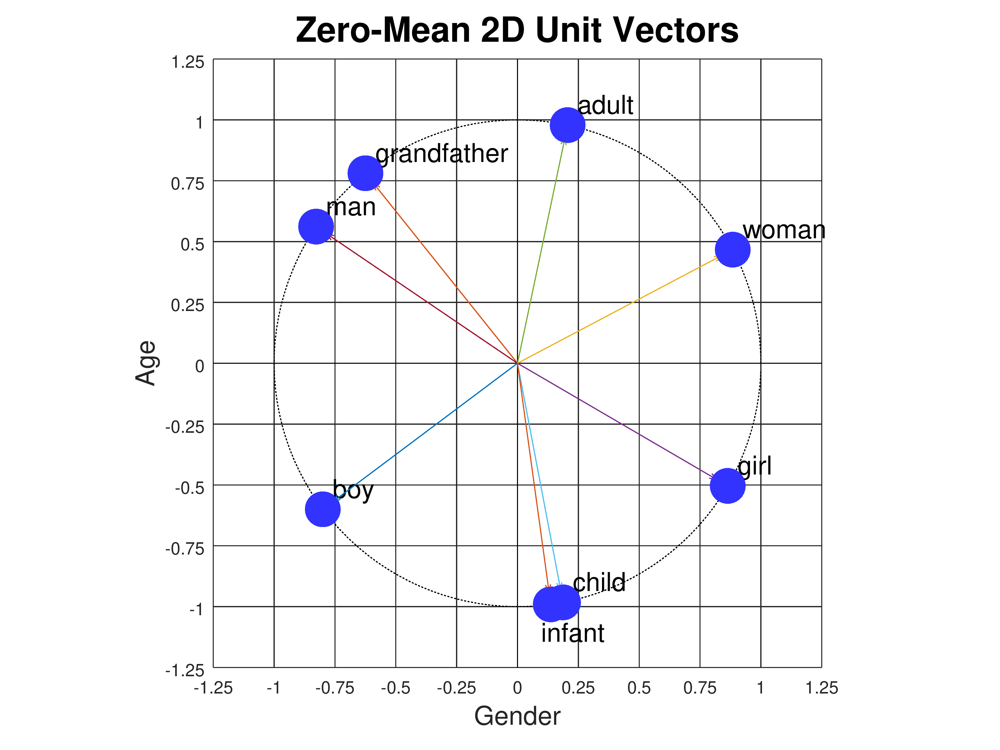

Word Embedding Demo: Tutorial
Navigation: Return to Demo or View Experiments
Semantic Feature Space
Consider the words "man", "woman", "boy", and "girl". Two of them
refer to males, and two to females. Also, two of them refer to
adults, and two to children. We can plot these worlds as points on
a graph where the x axis axis represents gender and
the y axis represents age:

Gender and age are called semantic features: they represent part of
the meaning of each word. If we associate a numerical scale with each feature,
then we can assign coordinates to each word:
| Word Coordinates |
|---|
| Gender | Age | |
|---|
| man | [ | 1, | 7 | ] |
| woman | [ | 9, | 7 | ] |
| boy | [ | 1, | 2 | ] |
| girl | [ | 9, | 2 | ] |
We can add new words to the plot based on their meanings. For
example, where should the words "adult" and "child" go? How about
"infant"? Or "grandfather"?

|
| Word Coordinates |
|---|
| Gender | Age | |
|---|
| grandfather | [ | 1, | 9 | ] |
| man | [ | 1, | 7 | ] |
| adult | [ | 5, | 7 | ] |
| woman | [ | 9, | 7 | ] |
| boy | [ | 1, | 2 | ] |
| child | [ | 5, | 2 | ] |
| girl | [ | 9, | 2 | ] |
| infant | [ | 5, | 1 | ] |
|
Exercise: how would you represent the words "grandmother",
"grandparent", "teenager", and "octogenarian"?
Answer: The gender coordinates are obvious. We can extrapolate
the age coordinates based on the values for the words we've already
defined:
|
|
| Word Coordinates |
|---|
| Gender | Age | |
|---|
| grandmother | [ | 9, | 9 | ] |
| grandparent | [ | 5, | 9 | ] |
| octogenarian | [ | 5, | 10 | ] |
| teenager | [ | 5, | 4 | ] |
|
Now let's consider the words "king", "queen", "prince", and "princess". They
have the same gender and age attibutes as "man", "woman", "boy', and "girl". But
they don't mean the same thing. In order to distinguish "man" from "king",
"woman" from "queen", and so on, we need to introduce a new semantic feature
in which they differ. Let's call it "royalty". Now we have to plot the points
in a 3-dimensional space:

|
| Word Coordinates |
|---|
| Gender | Age | Royalty |
|---|
| man | [ | 1, | 7, | 1 | ] |
| woman | [ | 9, | 7, | 1 | ] |
| boy | [ | 1, | 2, | 1 | ] |
| girl | [ | 9, | 2, | 1 | ] |
| king | [ | 1, | 8, | 8 | ] |
| queen | [ | 9, | 7, | 8 | ] |
| prince | [ | 1, | 2, | 8 | ] |
| princess | [ | 9, | 2, | 8 | ] |
|
Each word has three coordinate values: age, gender, and royalty. We
call these lists of numbers vectors. Since they represent the
values of semantic features, we can also call them feature
vectors. Notice that we've assigned "king" a slightly higher age
value (8) than "queen" (7). Perhaps it's because we've read lots of
stories about very old kings (think King Lear), but not so many about
very old queens. Feature values don't have to be perfectly
symmetrical.
Uses of Semantic Feature Vectors
What can we do with these numerical representations? One thing we can
use them for is judging similarity between words. For example, "boy"
is more similar to "girl" than to "queen" because the distance
from "boy" to "girl" is less than the distance from "boy" to "queen".
There are several ways to measure distance. One is to count the
number of features where the words differ. "Boy" and "girl" differ on
only one feature (gender), while "boy" and "queen" differ on all three
features (gender, age, and royalty). But this is a crude way to
measure similarity. A better way, since each word is represented by
coordinate values, is to compute the Euclidean distance between those
points, which can be done using the Pythagorean theorem. We won't go
into the details until later in this document. But if we do take this
approach, the distance between "boy" and "girl" turns out to be 8.0,
while the distance between "boy" and "queen" comes out to 11.75.
Semantic distance is a way to measure relatedness of words.
Google's Semantris
is a game that uses feature vector representations to determine which
words or phrases are related to which other words. It's worth
exploring.
An even more interesting thing we can do with semantic feature vectors
is solve word analogy problems.
Analogies By Vector Arithmetic
Analogies express the relationships between concepts. For example,
"man is to king as woman is to _____". To arrive at the answer we
first find the relationship between man and king. We can do this
numerically by calculating "king" - "man". We subtract each
coordinate separately, giving (1 - 1) , (8 - 7), and (8 - 0), or [0,
1, 8]. Then we add this to "woman", again treating each coordinate
separately, meaning (0 + 9), (1 + 7), (8 + 0) or [9, 8, 8]. Finally
we find the word closest to our result, which is "queen", or [9, 7,
8].
| king | [ | 1, | 8, | 8 | ] |
| man | [ | 1, | 7, | 0 | ] |
| king - man | [ | 0, | 1, | 8 | ] |
| woman | [ | 9, | 7, | 0 | ] |
| king - man + woman | [ | 9, | 8, | 8 | ] |
| queen | [ | 9, | 7, | 8 | ] |
We can also represent word analogies graphically. For the relationship
of "man" to "king" we draw an arrow from "man" to "king". Next we
copy this arrow, keeping the same direction and length, but now starting
from "woman". Then we see where the arrow points and look for the
closest word:

Word Embeddings
Going from two to three semantic features allowed us to represent more
words, but are three enough? How can we represent words such as
"cucumber", "smiled", or "honesty"? We could think up new semantic
features and move to a four or five or six dimensional space, but that
still wouldn't be enough. To represent the complexity of a typical
50,000 word English vocabulary requires hundreds of features.
Designing all those features by hand, and assigning accurate
coordinates to all those words, would be a lot of work!
Instead we can let the computer create the feature space for us by
supplying a machine learning algorithm with a large amount of text,
such as all of Wikipedia, or a huge collection of news articles. The
algorithm discovers statistical relationships between words by looking
at what other words they co-occur with. It uses this information to
create word representations in a semantic feature space of its own
design. These representations are called word embeddings. A
typical embedding might use a 300 dimensional space, so each word
would be represented by 300 numbers. The figure below shows the
embedding vectors for six words in our demo, which uses a
300-dimensional embedding. "Uncle", "boy", and "he" are male words,
while "aunt", "girl", and "she" are female words. Each word is
represented by 300 numbers with values between -0.2 and +0.2.
Component number 126 is shown magnified to the left. As you can see,
component 126 appears to correlate with gender: it has slightly
positive values (tan/orange) for the male words and slightly negative
values (blue/gray) for the female words.
This rich semantic space supports many kinds of analogies, such as
pluralization ("hand" is to "hands" as "foot" is to "feet"), past
tense ("sing is to sang as eat is to ate"), comparisons ("big" is to
"small" as "fast" is to "slow"), and even mapping countries to their
capitals ("France" is to "Paris" as "England" is to "London").
The most significant application of word embeddings is to encode words
for use as input to complex neural networks that try to understand the
meanings of entire sentences, or even paragraphs. One such class of
networks are called transformer neural networks. Two famous
transformer networks are BERT from Google and GPT3 from OpenAI. BERT
now handles many Google searches.
Measuring Euclidean Distance
Earlier we looked at ways to measure distance between two words.
Counting the number of features where they differ is too crude a
measure because it doesn't distinguish between small value differences
and large ones. The alternative we considered was Euclidean distance.
We will now explain the formula for calculating this. But first we
need to say a little more about vectors.
We've been drawing words as points in a semantic space, and we've also
referred to these points as vectors. In mathematics, a vector
is drawn as an arrow, and it consists of a length and a direction.
Words can be drawn as arrows that begin at the origin and end at the
point. So the word "child" can be drawn as an arrow from the origin
[0, 0] to the point [5, 2]. Here are all the words in our 2D semantic
space drawn as vectors:
 We can compare two words by drawing a vector from one to the other and
measuring its length. The vector from "boy" to "infant" can be
computed by starting with "infant" [5,1] and subtracting "boy" [1,2],
giving the vector [4, -1]. The length of a vector [x, y] is given by
the formula sqrt(x2 + y2), where sqrt is the
square root function. So the vector from "boy" to "infant" has a
length of sqrt(17), or about 4.12. This is the Euclidean distance
between the two words. Here are the vectors from "boy" to all the
other words, and their lengths:
We can compare two words by drawing a vector from one to the other and
measuring its length. The vector from "boy" to "infant" can be
computed by starting with "infant" [5,1] and subtracting "boy" [1,2],
giving the vector [4, -1]. The length of a vector [x, y] is given by
the formula sqrt(x2 + y2), where sqrt is the
square root function. So the vector from "boy" to "infant" has a
length of sqrt(17), or about 4.12. This is the Euclidean distance
between the two words. Here are the vectors from "boy" to all the
other words, and their lengths:
|
|
| Distance from "boy" |
| grandfather | 7 |
| man | 5 |
| adult | 6.4031 |
| woman | 9.4340 |
| boy | 0 |
| child | 4 |
| girl | 8 |
| infant | 4.1231 |
|
You can see that the closest word to "boy" is "child", but "infant" is
only a little bit further away.
The same Euclidean distance formula works in higher dimensions too.
The length of a 3D vector [x, y, z] is sqrt(x2 +
y2 + z2).
Euclidean distance is a perfectly reasonable distance measure, but
it's not the preferred distance measure for word embeddings. Instead
we use something called the dot product. It's actually a similarity
measure rather than a distance measure. Larger values mean words are
more similar.
Measuring Similarity With Dot Product
Given two vectors [x1, y1] and [x2,
y2], the Euclidean distance betwen them is
sqrt((x1-x2)2 +
(y1-y2)2). The dot product is
simpler: it's x1·x2 +
y1·y2.
The dot product is proportional to the cosine of the angle between the
two vectors. But in order for this to be a sensible measure of
similarity, we have to make a slight adjustment to the vectors first.
Consider the angles between the original vectors:
|
|
| Original Word Vectors |
| grandfather | [ | 1, | 9 | ] |
| man | [ | 1, | 7 | ] |
| adult | [ | 5, | 7 | ] |
| woman | [ | 9, | 7 | ] |
| boy | [ | 1, | 2 | ] |
| child | [ | 5, | 2 | ] |
| girl | [ | 9, | 2 | ] |
| infant | [ | 5, | 1 | ] |
|
In the above diagram, the angle between "boy" (maroon vector) and
"adult" (yellow vector) is small, while the angle between "boy" and
"child" (blue vector) is larger. But clearly "boy" is closer to
"child" than to "adult", since "boy" differs only modestly from
"child" in the gender coordinate, while it differs from "adult" in
both the gender and age coordinates. The problem is that all our
vectors originate at the origin. To correct the problem and make
angle a useful measure of similarity, we need the vectors to originate
at the center of all the points. So let's move the points so that
their center is at the origin. We can do this by taking the mean
(average) of all the points and subtracting that value from every
point. This means that for every feature, some words will have
negative feature values while others will have positive feature
values, so that their average is zero. Shifting the coordinates this
way has no effect on the Euclidean distance measure because all points
are shifted by the same amount. But it dramatically affects the dot
product. The result looks like this:
|
|
| Zero-Mean 2D Vectors |
| grandfather | [ | -3.500, | 4.375 | ] |
| man | [ | -3.500, | 2.375 | ] |
| adult | [ | 0.500, | 2.375 | ] |
| woman | [ | 4.500, | 2.375 | ] |
| boy | [ | -3.500, | -2.625 | ] |
| child | [ | 0.500, | -2.625 | ] |
| girl | [ | 4.500, | -2.625 | ] |
| infant | [ | 0.500, | -3.625 | ] |
|
Now the angle between the "boy" and "child" vectors is much smaller
than the angle between "boy" and "adult", as it should be because
"boy" and "child" only differ by 4 in their gender coordinates,
whereas "boy" and "adult" differ both by 4 in their gender coordinates
and by 5 in their age coordinates. But there is still an issue. The
dot product of two vectors is not exactly the cosine of the angle
θ between them; it's proportional to the cosine. Given
two vectors u and v, the exact value of u·v is
cos(θ)·||u||·||v||, where ||u|| is the length of
the vector u, i.e., its Euclidean distance from the origin. If we
want the dot product to exactly equal the cosine, we need
to normalize the vectors so that they have length 1. We do
this by dividing the coordinates of each vector by the length of the
vector, i.e., given a vector u = [x, y] with length ||u|| =
sqrt(x2 + y2), we can construct a unit
vector pointing in the same direction but with a length of 1 as
u/||u|| or [x/||u||, y/||u||].
Here is what the points look like when we convert them to unit vectors,
so they all lie on a circle of radius 1:
|

|
| Zero-Mean 2D Unit Vectors |
| grandfather | [ | -0.6247, | 0.7809 | ] |
| man | [ | -0.8275, | 0.5615 | ] |
| adult | [ | 0.2060, | 0.9785 | ] |
| woman | [ | 0.8844, | 0.4668 | ] |
| boy | [ | -0.8000, | -0.6000 | ] |
| child | [ | 0.1871, | -0.9823 | ] |
| girl | [ | 0.8638, | -0.5039 | ] |
| infant | [ | 0.1366, | -0.9906 | ] |
|
The dot product and Euclidean distance measures produce results that
are similar but not identical. For example, based on Euclidean
distance, "boy" is slightly closer to "child" than to "infant", but
looking at the unit vectors in the figure above, the angle between
"boy" and "infant" is slightly less than the angle between "boy" and
"child".
The word embeddings used in this demo, and by real AI systems, are
unit vectors with zero mean, just like the points above. The same
normalization technique applies to higher dimensional vectors, e.g.,
for three-dimensional semantic vectors, the points lie on the surface
of a unit sphere (a sphere with radius 1), as shown below:

|
| Zero-Mean 3D Unit Vectors |
|---|
| | Gender | Age | Royalty | |
|---|
| grandfather | [ | -0.5426, | 0.6412, | -0.5426 | ] |
| man | [ | -0.7191, | 0.4576, | -0.5230 | ] |
| woman | [ | 0.7741, | 0.4168, | -0.4764 | ] |
| boy | [ | -0.6971, | -0.5070, | -0.5070 | ] |
| girl | [ | 0.7543, | -0.4642, | -0.4642 | ] |
| king | [ | -0.5570, | 0.5064, | 0.6583 | ] |
| monarch | [ | 0.0676, | 0.4730, | 0.8785 | ] |
| queen | [ | 0.6608, | 0.3558, | 0.6608 | ] |
| prince | [ | -0.5846, | -0.4252, | 0.6909 | ] |
| princess | [ | 0.6484, | -0.3990, | 0.6484 | ] |
| child | [ | 0.0733, | -0.5866, | -0.8066 | ] |
| infant | [ | 0.0642, | -0.7057, | -0.7057 | ] |
|
Dot product is preferred to Euclidean distance for two reasons.
First, dot product requires fewer arithmetic operations. For
300-dimensional vectors, dot product requires 599 operations (300
multiplications plus 299 additions), while Euclidean distance requires
899 operations because it includes 300 subtractions. Second, the dot
product is exactly what a neuron in a neural net computes: it takes
the dot product of its weight vector with its input vector.
How Word Embeddings Are Created
There are a variety of algorithms for constructing word embeddings.
Here we describe one of the first ones, called Skip-gram with Negative
Sampling (SGNS).
Step 1: Assemble a text corpus. We might choose Wikipedia
articles, or a collection of news stories, or the complete works of
Shakespeare. The corpus determines the vocabulary we have to work
with and the co-occurrence statistics of words, since different
writing styles will use words differently.
Step 2: Choose a vocabulary size M. A large corpus could
contain one million distinct words if we include person names and
place names. Many of those words will occur infrequently. To keep
the embedding task manageable we might decide to keep only the highest
frequency words, e.g., we might choose the 50,000 words that occur
most frequently in the corpus. Filtering out the lowest-frequency
words also eliminates typos, e.g., "graet" should probably have been
"great", "grate", or "greet". At this stage we also need to decide
how to handle punctuation, contractions, subscripts and superscripts,
special characters such as Greek letters or trademark symbols, and
alternative capitalizations.
Step 3: Choose a context window size C. If we use a context
window of size C=2 we will look at five-word chunks. That is, for
each word in the corpus we will treat the 2 words to the left of it
and the 2 words to the right of it as its context.
Step 4: Assemble a co-occurrence dictionary. By proceeding one
word at a time through the corpus and looking C words back and C words
ahead, we can determine, for every target word, which words occur in
its context. For example, with C=2, given the text "Thou shalt not
make a machine in the likeness of a human mind", the co-occurrence
dictionary would look like this:
| thou | shalt, not |
| shalt | thou, not, make |
| not | thou, shalt, make, a |
| make | shalt, not, a, machine |
| a | not, make, machine, in, image, of, human, mind |
| machine | make, a, in, the |
| in | a, machine, the, image |
| the | machine, in, image, of |
| image | in, the, of, a |
| of | the, image, a, human |
| human | of, a, mind |
| mind | a, human |
Notice that the word "a" occurs twice in the corpus. Its contexts are
combined in the dictionary. In practice the corpus would be much
larger than this, with every word appearing multiple times, making for
a much richer context.
Step 5: Choose an embedding size N so that each word will be
represented by a list of N numbers. A typical value for N is 300,
although small embeddings might use only 100 numbers per word, while
large ones could use 700 or more. Larger values of N can encode more
information, but the embedding takes longer to compute and more memory
to store.
Step 6: Make two tables each containing M rows and N columns.
Each row represents a word. For example, if we have a 50,000 word
vocabulary and are constructing 300-element embeddings, the table
would be of size 50,000 × 300. One table, E, is for
the target words we're trying to embed. The second table, U, is for
words when they are used as context words. Initialize both tables
with small random numbers.
Step 7: This is the training process. Slide a window of size
2C+1 over the entire training corpus, shifting it by one word each
time. For each target word t in the middle slot of the window, look
up its vector e in the embedding table E. For each context
word u occurring in some other slot of the window, look up its
vector u in the context table U. Compute the dot
product e·u and run the result through a non-linear
squashing function (called the "sigmoid" or "logistic" function) that
produces an output value between 0 and 1. If the output is less than
1, make a tiny adjustment to the vectors e and u using a
technique called gradient descent learning; this technique is
also used to train neural networks. Repeat the process for all the
context words. These are the positive examples. We also need some
negative examples. Choose 5 to 10 vocabulary words at random that our
context dictionary indicates never appear in the context of the
target word. Apply the same procedure as above, except now we want
the value of the squashed dot product to be 0 rather than 1. Make
tiny adjustments to the embedding and context vectors accordingly. We
repeat this process, making a pass through the entire corpus, between
3 and 50 times.
Step 8: The embedding table E now contains the desired
embeddings. The context table U can be discarded.
Additional Resources
Navigation: Return to Demo or View Experiments